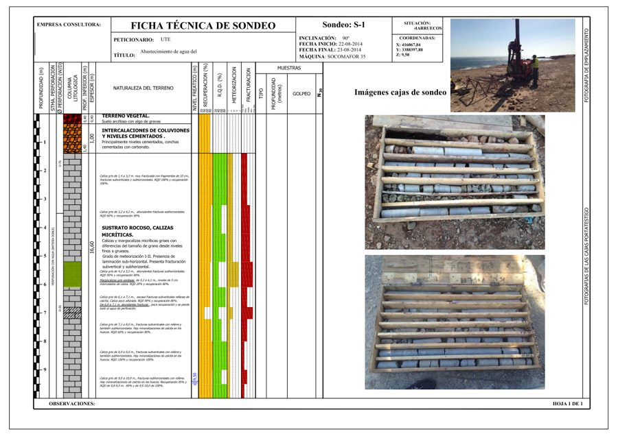
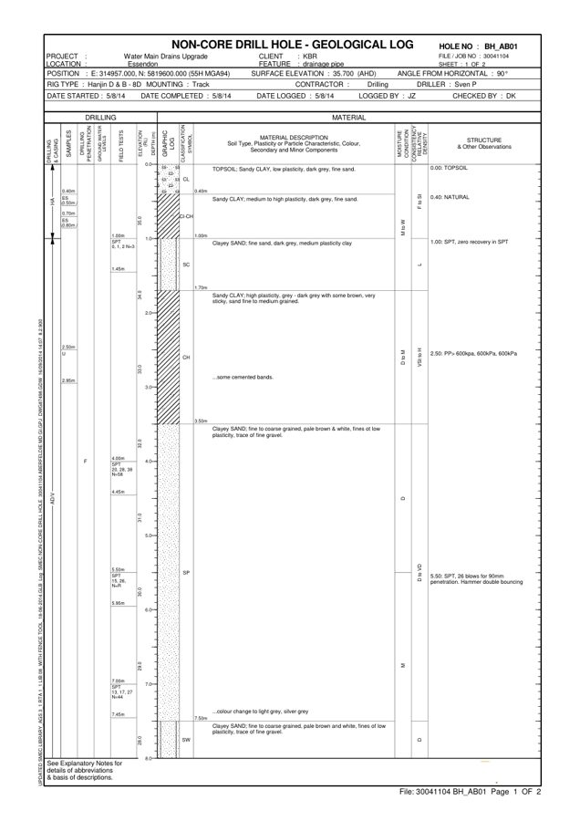
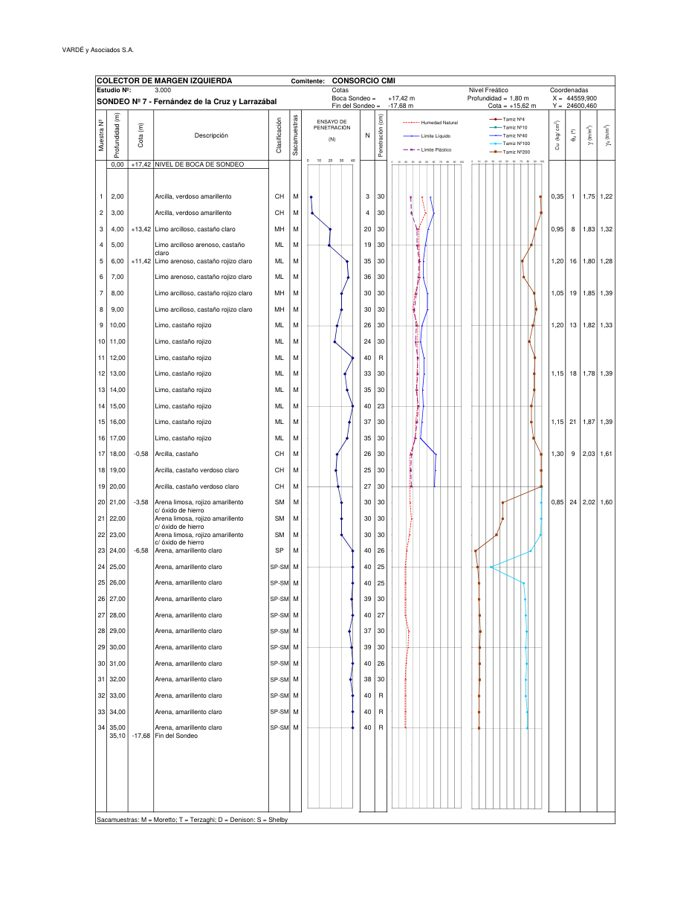
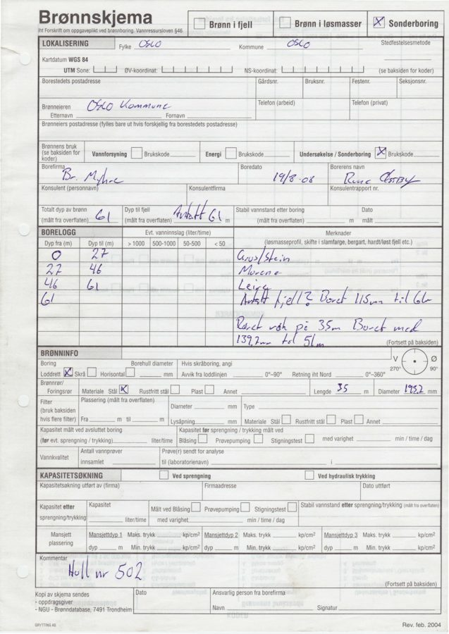
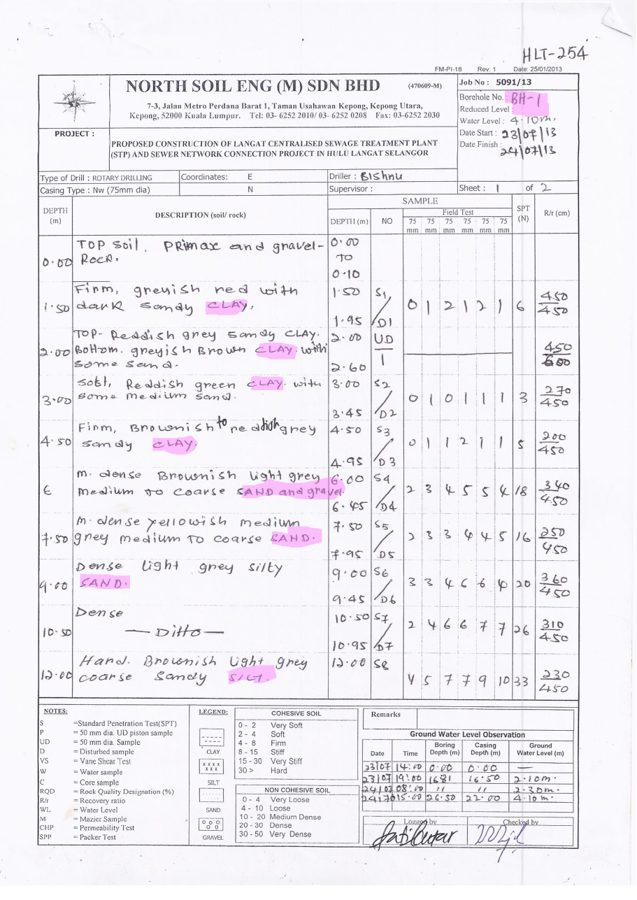

Bormisu
Team Tiramisu · Herrenknecht challenge · BFH 2026
Video: add herrenknecht.mp4
Herrenknecht
Tunnel boring machines from Schwanau, Baden. Under cities, mountains and the sea.
Herrenknecht
Some holes the world talks about.
Switzerland
Gotthard Base Tunnel
57 km
The world's longest railway tunnel, bored through the Alps.
France
Grand Paris Express
19 TBMs
Herrenknecht machines digging Paris's new metro.
Hong Kong
Airport subsea link
17.6 m
The world's largest TBM, under the sea to the airport.
Stuttgart 21
We don't talk about Stuttgart 21.
Bormisu04 / 11
Before the first metre
Every tunnel starts with a borehole.
Layers.
Soil or rock, and the exact depth where one turns into the other.
Strength.
SPT, RQD, compressive strength. What the cutter head will hit.
Water.
Where the groundwater sits, and how much will try to get in.
Thousands of data points per project. Get them wrong, and the machine is wrong.
Bormisu05 / 11
The problem
Every country logs it differently. Often every company does.

Africa · Spanish

Australia

South America
Southeast Asia

Norway · handwritten

Malaysia · handwritten
Different standards, units and grids. We turn all of it into one.
Bormisu06 / 11
Live demo
From a scanned report to the map.
1
Upload
PDF, scan, photo, Word or Excel
2
Map
Every borehole pinned, coloured by review status
3
Profile
Layers drawn to DIN 4023, groundwater, samples
4
Source
Click any value, see the box on the scan
5
Export
Herrenknecht standard xlsx, approved values only
→ Let's switch to the app.
Bormisu07 / 11
Under the hood
Models read. Python decides.
01
Upload
Checked by content, stored by hash, duplicates caught
→
02
Classify
A small model labels every page: log, table, map, text
→
03
OCR
Only pages with borehole data, text with boxes
→
04
Extract
Raw text of every value plus where it came from. Never a number
→
05 · PYTHON
Normalise & check
Units, SPT, coordinates, DIN 4023, lint rules. Doubts become questions
Mistral OCRFastAPIPostgreSQL + PostGISReact + LeafletDocker Compose
Bormisu08 / 11
Deployment
Cloud today. Your server room or a Mac mini tomorrow.
Cloud · running today
Mistral, Paris
No hardware
- OCRMistral OCR
- Classify & extractMistral Small · Mistral Large
Best OCR quality we found.
On-premise
One GPU, 32 GB
A single workstation card
- OCRPaddleOCR-VL · ~3 GB
- Classify, extract, chatQwen 3.8 27B · ~18 GB
Reports never leave the building.
Site office
Mac mini, 32 GB
Fits on a desk
- OCRPaddleOCR-VL · ~3 GB
- Classify, extract, chatQwen 3.8 27B · ~18 GB
Slower, but fully offline.
Bormisu09 / 11
Team Tiramisu
Built in Breisgau.
Bormisu10 / 11
Questions? We'll dig into them.
Questions about Stuttgart 21 go to Deutsche Bahn.